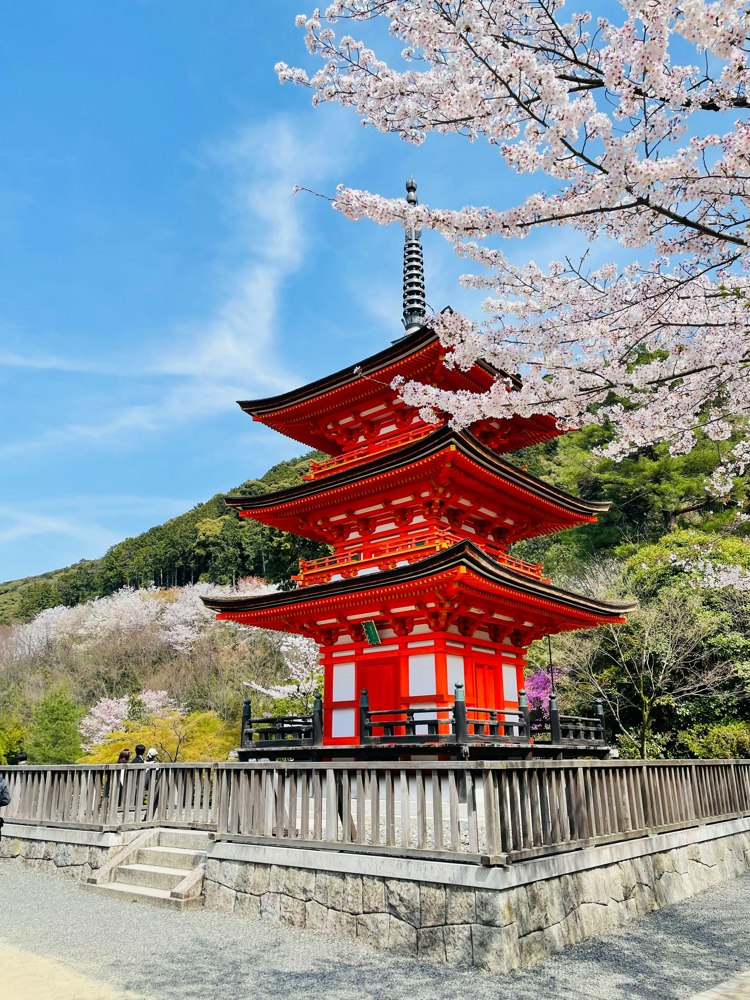

Monumento de la Paz
Hiroshima
Donde la tradición se encuentra con el mañana. Explorar Japón es descubrir un mosaico de regiones, cada una con su propio sabor,propio arte y sus propios rituales.
Déjate envolver por un territorio donde lo ancestral y lo innovador no solo conviven, sino que crean algo totalmente único.
Tu viaje por el corazon del sol Naciente comienza aqui.


Algunos de los destinos más visitados reflejan la diversidad cultural del país, desde la innovación de Tokio hasta la tradición de Kioto y la historia de Hiroshima. Cada lugar ofrece una experiencia unica que combina pasado, presente y cultura.
Hiroshima

Tokio

Kioto

Kyoto

Osaka

Okayama
La luz del sol que se filtra a través de las hojas de los árboles